7 Interactions
Every model so far in [McElreath’s text] has assumed that each predictor has an independent association with the mean of the outcome. What if we want to allow the association to be conditional?… To model deeper conditionality—where the importance of one predictor depends upon another predictor—we need interaction. Interaction is a kind of conditioning, a way of allowing parameters (really their posterior distributions) to be conditional on further aspects of the data. (McElreath, 2015, p. 210)
7.1 Building an interaction.
“Africa is special” (p. 211). Let’s load the rugged data (Nunn & Puga, 2012) to see one of the reasons why.
library(tidyverse)
library(rethinking)
data(rugged)
d <- ruggedAnd here we switch out rethinking for brms.
detach(package:rethinking, unload = T)
library(brms)
rm(rugged)We’ll continue to use tidyverse-style syntax to wrangle the data.
# make the log version of criterion
d <-
d %>%
mutate(log_gdp = log(rgdppc_2000))
# extract countries with GDP data
dd <-
d %>%
filter(complete.cases(rgdppc_2000))
# split the data into countries in Africa and not in Africa
d.A1 <-
dd %>%
filter(cont_africa == 1)
d.A0 <-
dd %>%
filter(cont_africa == 0)The first two models predicting log_gdp are univariable.
b7.1 <-
brm(data = d.A1,
family = gaussian,
log_gdp ~ 1 + rugged,
prior = c(prior(normal(8, 100), class = Intercept),
prior(normal(0, 1), class = b),
prior(uniform(0, 10), class = sigma, ub = 10)),
iter = 2000, warmup = 1000, chains = 4, cores = 4,
seed = 7,
file = "fits/b07.01")
b7.2 <-
update(b7.1,
newdata = d.A0,
iter = 2000, warmup = 1000, chains = 4, cores = 4,
seed = 7,
file = "fits/b07.02")In the text, McElreath more or less dared us to figure out how to make Figure 7.2. Here’s the brms-relevant data wrangling.
nd <-
tibble(rugged = seq(from = 0, to = 6.3, length.out = 30))
f <-
# bind the two `fitted()` summaries together
rbind(fitted(b7.1, newdata = nd),
fitted(b7.2, newdata = nd)) %>%
as_tibble() %>%
# add the `nd` data, one copy stacked atop another
bind_cols(
bind_rows(nd, nd)
) %>%
mutate(cont_africa = rep(c("Africa", "not Africa"), each = 30))For this chapter, we’ll take our plot theme from the ggthemes package (Arnold, 2021).
library(ggthemes)Here’s the plot code for our version of Figure 7.2.
dd %>%
mutate(cont_africa = ifelse(cont_africa == 1, "Africa", "not Africa")) %>%
ggplot(aes(x = rugged, color = cont_africa, fill = cont_africa)) +
geom_smooth(data = f,
aes(y = Estimate, ymin = Q2.5, ymax = Q97.5),
stat = "identity",
alpha = 1/4, linewidth = 1/2) +
geom_point(aes(y = log_gdp),
size = 2/3) +
scale_colour_pander() +
scale_fill_pander() +
scale_x_continuous("Terrain Ruggedness Index", expand = c(0, 0)) +
ylab("log GDP from year 2000") +
theme_pander() +
theme(text = element_text(family = "Times"),
legend.position = "none") +
facet_wrap(~cont_africa)
It’s generally not a good idea to split up your data and run separate analyses, like this. McElreath listed four reasons why:
- “There are usually some parameters, such as \(\sigma\), that the model says do not depend in any way upon an African identity for each nation. By splitting the data table, you are hurting the accuracy of the estimates for these parameters” (p. 213).
- “In order to acquire probability statements about the variable you used to split the data,
cont_africa, in this case, you need to include it in the model” (p. 213). - “We many want to use information criteria or another method to compare models” (p. 214).
- “Once you begin using multilevel models (Chapter 12), you’ll see that there are advantages to borrowing information across categories like ‘Africa’ and ‘not Africa’” (p. 214).
7.1.1 Adding a dummy variable doesn’t work.
Here’s our model with all the countries, but without the cont_africa dummy.
b7.3 <-
update(b7.1,
newdata = dd,
iter = 2000, warmup = 1000, chains = 4, cores = 4,
seed = 7,
file = "fits/b07.03")Now we’ll add the dummy.
b7.4 <-
update(b7.3,
newdata = dd,
formula = log_gdp ~ 1 + rugged + cont_africa,
iter = 2000, warmup = 1000, chains = 4, cores = 4,
seed = 7,
file = "fits/b07.04") Using the skills from Chapter 6, let’s compute the information criteria for the two models. Note how with the add_criterion() function, you can compute both the LOO and the WAIC at once.
b7.3 <- add_criterion(b7.3, c("loo", "waic"))
b7.4 <- add_criterion(b7.4, c("loo", "waic"))Here we’ll compare the models with the loo_compare() function, first by the WAIC and then by the LOO.
loo_compare(b7.3, b7.4,
criterion = "waic")## elpd_diff se_diff
## b7.4 0.0 0.0
## b7.3 -31.6 7.3loo_compare(b7.3, b7.4,
criterion = "loo")## elpd_diff se_diff
## b7.4 0.0 0.0
## b7.3 -31.6 7.3Happily, the WAIC and the LOO are in agreement. The model with the dummy, b7.4, fit the data much better. Here are the WAIC model weights.
model_weights(b7.3, b7.4,
weights = "waic") %>%
round(digits = 3)## b7.3 b7.4
## 0 1As in the text, almost all the weight went to the multivariable model, b7.4. Before we can plot that model, we need to wrangle a bit.
nd <-
crossing(cont_africa = 0:1,
rugged = seq(from = 0, to = 6.3, length.out = 30))
f <-
fitted(b7.4, newdata = nd) %>%
as_tibble() %>%
bind_cols(nd) %>%
mutate(cont_africa = ifelse(cont_africa == 1, "Africa", "not Africa"))Behold our Figure 7.3.
dd %>%
mutate(cont_africa = ifelse(cont_africa == 1, "Africa", "not Africa")) %>%
ggplot(aes(x = rugged, fill = cont_africa, color = cont_africa)) +
geom_smooth(data = f,
aes(y = Estimate, ymin = Q2.5, ymax = Q97.5),
stat = "identity",
alpha = 1/4, linewidth = 1/2) +
geom_point(aes(y = log_gdp),
size = 2/3) +
scale_colour_pander() +
scale_fill_pander() +
scale_x_continuous("Terrain Ruggedness Index", expand = c(0, 0)) +
ylab("log GDP from year 2000") +
theme_pander() +
theme(text = element_text(family = "Times"),
legend.background = element_blank(),
legend.direction = "horizontal",
legend.position = c(.69, .94),
legend.title = element_blank())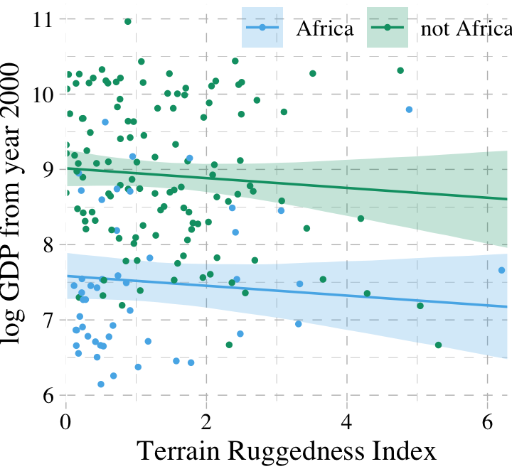
7.1.2 Adding a linear interaction does work.
Yes, it sure does. But before we fit, here’s the equation:
\[\begin{align*} \text{log_gdp}_i & \sim \operatorname{Normal}(\mu_i, \sigma) \\ \mu_i & = \alpha + \gamma_i \text{rugged}_i + \beta_2 \text{cont_africa}_i \\ \gamma_i & = \beta_1 + \beta_3 \text{cont_africa}_i \\ \alpha & \sim \operatorname{Normal}(8, 100) \\ \beta_1, \beta_2, \text{ and } \beta_3 & \sim \operatorname{Normal}(0, 1) \\ \sigma & \sim \operatorname{Uniform}(0, 10). \end{align*}\]
Because \(\gamma_i\) is just a placeholder for a second linear model, we can just substitute that second linear model in for \(\gamma_i\). If we did, here’s what the composite linear model would look like:
\[\mu_i = \alpha + (\beta_1 + \beta_3 \text{cont_africa}_i) \text{rugged}_i + \beta_2 \text{cont_africa}_i\]
Fit the model.
b7.5 <-
update(b7.4,
formula = log_gdp ~ 1 + rugged*cont_africa,
iter = 2000, warmup = 1000, chains = 4, cores = 4,
seed = 7,
file = "fits/b07.05") For kicks, we’ll just use the LOO to compare the last three models.
b7.5 <- add_criterion(b7.5, c("loo", "waic"))
l <- loo_compare(b7.3, b7.4, b7.5,
criterion = "loo")
print(l, simplify = F)## elpd_diff se_diff elpd_loo se_elpd_loo p_loo se_p_loo looic se_looic
## b7.5 0.0 0.0 -234.8 7.3 5.2 0.9 469.7 14.6
## b7.4 -3.2 3.0 -238.1 7.4 4.2 0.8 476.1 14.8
## b7.3 -34.8 7.3 -269.7 6.5 2.5 0.3 539.3 12.9And recall, if we want those LOO difference scores in the traditional metric like McElreath displayed in the text, we can do a quick conversion with algebra and cbind().
cbind(loo_diff = l[, 1] * -2,
se = l[, 2] * 2)## loo_diff se
## b7.5 0.000000 0.000000
## b7.4 6.446362 5.903881
## b7.3 69.651219 14.660873And we can weight the models based on the LOO rather than the WAIC, too.
model_weights(b7.3, b7.4, b7.5,
weights = "loo") %>%
round(digits = 3)## b7.3 b7.4 b7.5
## 0.000 0.038 0.9627.1.2.1 Overthinking: Conventional form of interaction.
The conventional equation for the interaction model might look like:
\[\begin{align*} \text{log_gdp}_i & \sim \operatorname{Normal}(\mu_i, \sigma) \\ \mu_i & = \alpha + \beta_1 \text{rugged}_i + \beta_2 \text{cont_africa}_i + \beta_3 \text{rugged}_i \times \text{cont_africa}_i. \end{align*}\]
Instead of the y ~ 1 + x1*x2 approach, which will work fine with brm(), you can use this more explicit syntax.
b7.5b <-
update(b7.5,
formula = log_gdp ~ 1 + rugged + cont_africa + rugged:cont_africa,
iter = 2000, warmup = 1000, chains = 4, cores = 4,
seed = 7,
file = "fits/b07.05b") From here on, I will default to this style of syntax for interactions.
Since this is the same model, it yields the same information criteria estimates. Here we’ll confirm that with the LOO.
b7.5b <- add_criterion(b7.5b, c("loo", "waic"))
b7.5$criteria$loo##
## Computed from 4000 by 170 log-likelihood matrix
##
## Estimate SE
## elpd_loo -234.8 7.3
## p_loo 5.2 0.9
## looic 469.7 14.6
## ------
## Monte Carlo SE of elpd_loo is 0.1.
##
## Pareto k diagnostic values:
## Count Pct. Min. n_eff
## (-Inf, 0.5] (good) 169 99.4% 1312
## (0.5, 0.7] (ok) 1 0.6% 1405
## (0.7, 1] (bad) 0 0.0% <NA>
## (1, Inf) (very bad) 0 0.0% <NA>
##
## All Pareto k estimates are ok (k < 0.7).
## See help('pareto-k-diagnostic') for details.b7.5b$criteria$loo##
## Computed from 4000 by 170 log-likelihood matrix
##
## Estimate SE
## elpd_loo -234.8 7.3
## p_loo 5.2 0.9
## looic 469.7 14.6
## ------
## Monte Carlo SE of elpd_loo is 0.1.
##
## Pareto k diagnostic values:
## Count Pct. Min. n_eff
## (-Inf, 0.5] (good) 169 99.4% 1312
## (0.5, 0.7] (ok) 1 0.6% 1405
## (0.7, 1] (bad) 0 0.0% <NA>
## (1, Inf) (very bad) 0 0.0% <NA>
##
## All Pareto k estimates are ok (k < 0.7).
## See help('pareto-k-diagnostic') for details.When compared, they have the exact same LOO weights, too.
model_weights(b7.5, b7.5b, weights = "loo")## b7.5 b7.5b
## 0.5 0.57.1.3 Plotting the interaction.
Here’s our prep work for the figure.
f <-
fitted(b7.5, newdata = nd) %>% # we can use the same `nd` data from last time
as_tibble() %>%
bind_cols(nd) %>%
mutate(cont_africa = ifelse(cont_africa == 1, "Africa", "not Africa"))And here’s the code for our version of Figure 7.4.
dd %>%
mutate(cont_africa = ifelse(cont_africa == 1, "Africa", "not Africa")) %>%
ggplot(aes(x = rugged, fill = cont_africa, color = cont_africa)) +
geom_smooth(data = f,
aes(y = Estimate, ymin = Q2.5, ymax = Q97.5),
stat = "identity",
alpha = 1/4, linewidth = 1/2) +
geom_point(aes(y = log_gdp),
size = 2/3) +
scale_colour_pander() +
scale_fill_pander() +
scale_x_continuous("Terrain Ruggedness Index", expand = c(0, 0)) +
ylab("log GDP from year 2000") +
theme_pander() +
theme(text = element_text(family = "Times"),
legend.position = "none") +
facet_wrap(~cont_africa)
7.1.4 Interpreting an interaction estimate.
Interpreting interaction estimates is tricky. It’s trickier than interpreting ordinary estimates. And for this reason, I usually advise against trying to understand an interaction from tables of numbers alone. Plotting implied predictions does far more for both our own understanding and for our audience’s. (p. 219)
7.1.4.1 Parameters change meaning.
In a simple linear regression with no interactions, each coefficient says how much the average outcome, \(\mu\), changes when the predictor changes by one unit. And since all of the parameters have independent influences on the outcome, there’s no trouble in interpreting each parameter separately. Each slope parameter gives us a direct measure of each predictor variable’s influence.
Interaction models ruin this paradise. (p. 220)
Return the parameter estimates.
posterior_summary(b7.5)[1:5, ]## Estimate Est.Error Q2.5 Q97.5
## b_Intercept 9.1878514 0.13901755 8.91866731 9.46277109
## b_rugged -0.1851148 0.07714022 -0.33591189 -0.03181227
## b_cont_africa -1.8461645 0.22413995 -2.27497448 -1.40541453
## b_rugged:cont_africa 0.3473497 0.13070615 0.08719828 0.59316599
## sigma 0.9526147 0.05328941 0.85598268 1.06326140“Since \(\gamma\) (gamma) doesn’t appear in this table–it wasn’t estimated–we have to compute it ourselves” (p. 221). Like in the text, we’ll do so first by working with the point estimates.
# slope relating `rugged` to `log_gdp` within Africa
fixef(b7.5)[2, 1] + fixef(b7.5)[4, 1] * 1## [1] 0.1622349# slope relating `rugged` to `log_gdp` outside of Africa
fixef(b7.5)[2, 1] + fixef(b7.5)[4, 1] * 0## [1] -0.18511487.1.4.2 Incorporating uncertainty.
To get some idea of the uncertainty around those \(\gamma\) values, we’ll need to use the whole posterior. Since \(\gamma\) depends upon parameters, and those parameters have a posterior distribution, \(\gamma\) must also have a posterior distribution. Read the previous sentence again a few times. It’s one of the most important concepts in processing Bayesian model fits. Anything calculated using parameters has a distribution. (p. 212, emphasis added)
Like McElreath, we’ll avoid integral calculus in favor of working with the posterior draws.
post <- as_draws_df(b7.5)
post %>%
transmute(gamma_Africa = b_rugged + `b_rugged:cont_africa` * 1,
gamma_notAfrica = b_rugged + `b_rugged:cont_africa` * 0) %>%
gather(key, value) %>%
group_by(key) %>%
summarise(mean = mean(value))## # A tibble: 2 × 2
## key mean
## <chr> <dbl>
## 1 gamma_Africa 0.162
## 2 gamma_notAfrica -0.185And here is our version of Figure 7.5.
post %>%
# this `transmute()` code returns the same thing as the one in the block above
transmute(gamma_Africa = b_rugged + `b_rugged:cont_africa`,
gamma_notAfrica = b_rugged) %>%
gather(key, value) %>%
ggplot(aes(x = value, group = key, color = key, fill = key)) +
geom_density(alpha = 1/4) +
scale_colour_pander() +
scale_fill_pander() +
scale_x_continuous(expression(gamma), expand = c(0, 0)) +
scale_y_continuous(NULL, breaks = NULL) +
ggtitle("Terraine Ruggedness slopes",
subtitle = "Blue = African nations, Green = others") +
theme_pander() +
theme(text = element_text(family = "Times"),
legend.position = "none")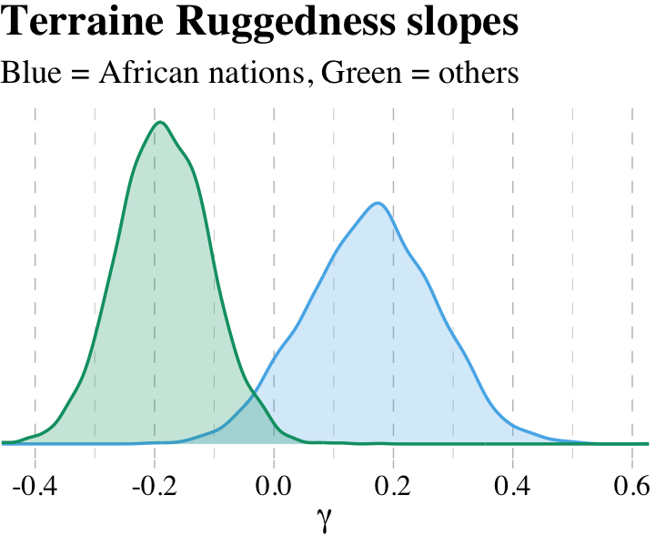
What proportion of these differences is below zero?
post %>%
mutate(gamma_Africa = b_rugged + `b_rugged:cont_africa`,
gamma_notAfrica = b_rugged) %>%
mutate(diff = gamma_Africa -gamma_notAfrica) %>%
summarise(Proportion_of_the_difference_below_0 = sum(diff < 0) / length(diff))## # A tibble: 1 × 1
## Proportion_of_the_difference_below_0
## <dbl>
## 1 0.00625The distributions in the figure are marginal, like silhouettes of each distribution, ignoring all of the other dimensions in the posterior. The calculation above is the distribution of the difference between the two. The distribution of their difference is not the same as the visual overlap of their marginal distributions. This is also the reason we can’t use overlap in confidence intervals of different parameters as an informal test of “significance” of the difference. If you care about the difference, you must compute the distribution of the difference directly. (p. 222, emphasis in the original)
Why stop with computation when you can plot?
post %>%
mutate(gamma_Africa = b_rugged + `b_rugged:cont_africa`,
gamma_notAfrica = b_rugged) %>%
mutate(diff = gamma_Africa -gamma_notAfrica) %>%
ggplot(aes(x = diff)) +
geom_density(alpha = 1/4,
color = palette_pander(n = 5)[5],
fill = palette_pander(n = 5)[5]) +
scale_x_continuous(expression(gamma[1]-gamma[0]), expand = c(0, 0)) +
scale_y_continuous(NULL, breaks = NULL) +
ggtitle("Distribution of the difference") +
theme_pander() +
theme(text = element_text(family = "Times"),
legend.position = "none")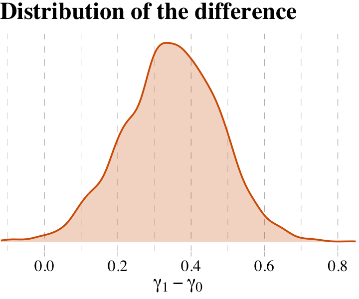
7.2 Symmetry of the linear interaction.
Consider for example the GDP and terrain ruggedness problem. The interaction there has two equally valid phrasings.
- How much does the influence of ruggedness (on GDP) depend upon whether the nation is in Africa?
- How much does the influence of being in Africa (on GDP) depend upon ruggedness?
While these two possibilities sound different to most humans, your golem thinks they are identical. (p. 223)
7.2.1 Buridan’s interaction.
Recall the original equation,
\[\begin{align*} \text{log_gdp}_i & \sim \operatorname{Normal}(\mu_i, \sigma) \\ \mu_i & = \alpha + \gamma_i \text{rugged}_i + \beta_2 \text{cont_africa}_i \\ \gamma_i & = \beta_1 + \beta_3 \text{cont_africa}_i. \end{align*}\]
Next McElreath replaced \(\gamma_i\) with the expression for \(\mu_i\):
\[\begin{align*} \mu_i & = \alpha + (\beta_1 + \beta_3 \text{cont_africa}_i) \times \text{rugged}_i + \beta_2 \text{cont_africa}_i \\ & = \alpha + \beta_1 \text{rugged}_i + \beta_3 \text{rugged}_i \times \text{cont_africa}_i + \beta_2 \text{cont_africa}_i. \end{align*}\]
And now we’ll factor together the terms containing \(\text{cont_africa}_i\):
\[ \mu_i = \alpha + \beta_1 \text{rugged}_i + \underbrace{(\beta_2 + \beta_3 \text{rugged}_i)}_G \times \text{cont_africa}_i. \]
And just as in the text, our \(G\) term looks a lot like the original \(\gamma_i\) term.
7.2.2 Africa depends upon ruggedness.
Here is our version of McElreath’s Figure 7.6.
# new predictor data for `fitted()`
nd <-
crossing(cont_africa = 0:1,
rugged = range(dd$rugged))
# `fitted()`
f <-
fitted(b7.5, newdata = nd) %>%
as_tibble() %>%
bind_cols(nd) %>%
mutate(ox = rep(c(-0.05, 0.05), times = 2))
# augment the `dd` data a bit
dd %>%
mutate(ox = ifelse(rugged > median(rugged), 0.05, -0.05),
cont_africa = cont_africa + ox) %>%
mutate(ox = factor(ox)) %>%
select(cont_africa, everything()) %>%
# plot
ggplot(aes(x = cont_africa, color = ox, fill = ox)) +
geom_smooth(data = f %>% mutate(ox = factor(ox)),
aes(y = Estimate, ymin = Q2.5, ymax = Q97.5,
linetype = ox),
stat = "identity",
alpha = 1/4, linewidth = 1/2) +
geom_point(aes(y = log_gdp),
alpha = 1/2, shape = 1) +
scale_colour_pander() +
scale_fill_pander() +
scale_x_continuous("Continent", breaks = 0:1,
labels = c("other", "Africa")) +
coord_cartesian(xlim = c(-.2, 1.2)) +
ylab("log GDP from year 2000") +
theme_pander() +
theme(text = element_text(family = "Times"),
legend.position = "none")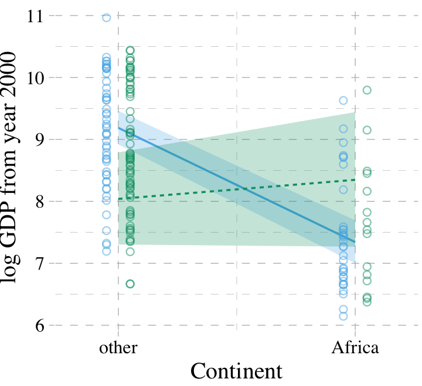
7.3 Continuous interactions
Though continuous interactions can be more challenging to interpret, they’re just as easy to fit as interactions including dummies.
7.3.1 The data.
Look at the tulips (adapted from Grafen & Hails (2002)).
library(rethinking)
data(tulips)
d <- tulips
str(d)## 'data.frame': 27 obs. of 4 variables:
## $ bed : Factor w/ 3 levels "a","b","c": 1 1 1 1 1 1 1 1 1 2 ...
## $ water : int 1 1 1 2 2 2 3 3 3 1 ...
## $ shade : int 1 2 3 1 2 3 1 2 3 1 ...
## $ blooms: num 0 0 111 183.5 59.2 ...7.3.2 The un-centered models.
The equations for the next two models are
\[\begin{align*} \text{blooms}_i & \sim \operatorname{Normal}(\mu_i, \sigma) \\ \mu_i & = \alpha + \beta_1 \text{water}_i + \beta_2 \text{shade}_i \\ \alpha & \sim \operatorname{Normal}(0, 100) \\ \beta_1 & \sim \operatorname{Normal}(0, 100) \\ \beta_2 & \sim \operatorname{Normal}(0, 100) \\ \sigma & \sim \operatorname{Uniform}(0, 100), \;\;\; \text{and} \\ \\ \text{blooms}_i & \sim \operatorname{Normal}(\mu_i, \sigma) \\ \mu_i & = \alpha + \beta_1 \text{water} + \beta_2 \text{shade}_i + \beta_3 \text{water}_i \times \text{shade}_i \\ \alpha & \sim \operatorname{Normal}(0, 100) \\ \beta_1 & \sim \operatorname{Normal}(0, 100) \\ \beta_2 & \sim \operatorname{Normal}(0, 100) \\ \beta_3 & \sim \operatorname{Normal}(0, 100) \\ \sigma & \sim \operatorname{Uniform}(0, 100). \end{align*}\]
Load brms.
detach(package:rethinking, unload = T)
library(brms)
rm(tulips)Here we continue with McElreath’s very-flat priors for the multivariable and interaction models.
b7.6 <-
brm(data = d, family = gaussian,
blooms ~ 1 + water + shade,
prior = c(prior(normal(0, 100), class = Intercept),
prior(normal(0, 100), class = b),
prior(uniform(0, 100), class = sigma, ub = 100)),
iter = 2000, warmup = 1000, cores = 4, chains = 4,
seed = 7,
file = "fits/b07.06")
b7.7 <-
update(b7.6,
formula = blooms ~ 1 + water + shade + water:shade,
iter = 2000, warmup = 1000, cores = 4, chains = 4,
seed = 7,
file = "fits/b07.07")Unlike in the text, these models fit without problem.
Instead of coeftab(), we can use the posterior_summary() function, which gets us most of the way there.
posterior_summary(b7.6)[1:4, ] %>% round(digits = 2)## Estimate Est.Error Q2.5 Q97.5
## b_Intercept 60.79 44.72 -29.69 153.41
## b_water 73.75 14.83 43.35 101.68
## b_shade -40.58 14.96 -69.68 -10.03
## sigma 64.16 9.96 47.83 87.88posterior_summary(b7.7)[1:5, ] %>% round(digits = 2)## Estimate Est.Error Q2.5 Q97.5
## b_Intercept -105.96 66.32 -235.18 25.37
## b_water 159.26 30.67 98.56 217.31
## b_shade 43.26 30.50 -17.72 101.83
## b_water:shade -42.85 14.15 -70.58 -13.83
## sigma 52.05 8.32 38.66 70.59This is an example where HMC yielded point estimates notably different from MAP. However, look at the size of those posterior standard deviations (i.e., ‘Est.Error’ column)! The MAP estimates are well within a fraction of those \(\textit{SD}\)’s.
Let’s look at WAIC.
b7.6 <- add_criterion(b7.6, "waic")
b7.7 <- add_criterion(b7.7, "waic")
w <- loo_compare(b7.6, b7.7, criterion = "waic")
print(w, simplify = F)## elpd_diff se_diff elpd_waic se_elpd_waic p_waic se_p_waic waic se_waic
## b7.7 0.0 0.0 -146.8 3.7 4.3 1.1 293.5 7.3
## b7.6 -5.2 2.4 -151.9 3.5 3.7 0.9 303.8 7.0Here we use our cbind() trick to convert the difference from the \(\text{elpd}\) metric to the more traditional WAIC metric.
cbind(waic_diff = w[, 1] * -2,
se = w[, 2] * 2)## waic_diff se
## b7.7 0.00000 0.000000
## b7.6 10.30703 4.864103Why not compute the WAIC weights?
model_weights(b7.6, b7.7, weights = "waic")## b7.6 b7.7
## 0.005745863 0.994254137As in the text, almost all the weight went to the interaction model, b7.7.
7.3.2.1 Rethinking: Fighting with your robot.
The trouble-shooting in the preceding section is annoying, but it’s realistic. These kinds of issues routinely arise in model fitting. With linear models like these, there are ways to compute the posterior distribution that avoid many of these complications. But with non-linear models to come, there is really no way to dodge the issue. In general, how you fit the model is part of the model. (pp. 229–230, emphasis added)
7.3.3 Center and re-estimate.
To center a variable means to create a new variable that contains the same information as the original, but has a new mean of zero. For example, to make centered versions of
shadeandwater, just subtract the mean of the original from each value. (p. 230, emphasis in the original)
Here’s a tidyverse way to center the predictors.
d <-
d %>%
mutate(shade_c = shade - mean(shade),
water_c = water - mean(water))Now refit the models with our shiny new centered predictors.
b7.8 <-
brm(data = d, family = gaussian,
blooms ~ 1 + water_c + shade_c,
prior = c(prior(normal(130, 100), class = Intercept),
prior(normal(0, 100), class = b),
prior(uniform(0, 100), class = sigma, ub = 100)),
iter = 2000, warmup = 1000, chains = 4, cores = 4,
seed = 7,
file = "fits/b07.08")
b7.9 <-
update(b7.8,
formula = blooms ~ 1 + water_c + shade_c + water_c:shade_c,
iter = 2000, warmup = 1000, chains = 4, cores = 4,
seed = 7,
file = "fits/b07.09")Check out the results.
posterior_summary(b7.8)[1:4, ] %>% round(digits = 2)## Estimate Est.Error Q2.5 Q97.5
## b_Intercept 128.88 12.44 104.20 153.36
## b_water_c 74.03 14.96 43.64 104.33
## b_shade_c -40.53 15.55 -70.98 -10.40
## sigma 64.33 9.86 48.13 87.68posterior_summary(b7.9)[1:5, ] %>% round(digits = 2)## Estimate Est.Error Q2.5 Q97.5
## b_Intercept 128.78 10.37 108.11 149.06
## b_water_c 74.73 11.98 51.04 98.06
## b_shade_c -41.08 12.36 -65.45 -16.85
## b_water_c:shade_c -51.78 15.23 -81.79 -20.56
## sigma 51.97 8.27 39.02 71.15And okay fine, if you really want a coeftab()-like summary, here’s a way to do it.
get_summary <- function(fit) {
fit %>%
posterior::summarise_draws(mean) %>%
filter(variable != "lprior") %>%
filter(variable != "lp__")
}
tibble(model = str_c("b7.", 8:9)) %>%
mutate(fit = purrr::map(model, get)) %>%
mutate(mean = purrr::map(fit, get_summary)) %>%
select(-fit) %>%
unnest(mean) %>%
select(variable, mean, model) %>%
spread(key = model, value = mean) %>%
mutate_if(is.double, round, digits = 2)## # A tibble: 5 × 3
## variable b7.8 b7.9
## <chr> <dbl> <dbl>
## 1 b_Intercept 129. 129.
## 2 b_shade_c -40.5 -41.1
## 3 b_water_c 74.0 74.7
## 4 b_water_c:shade_c NA -51.8
## 5 sigma 64.3 52.0Anyway, centering helped a lot. Now, not only do the results in the text match up better than those from Stan, but the ‘Est.Error’ values are uniformly smaller.
7.3.3.2 Estimates changed less across models.
On page 231, we read:
The interaction parameter always factors into generating a prediction. Consider for example a tulip at the average moisture and shade levels, 2 in each case. The expected blooms for such a tulip is:
\[\mu_i | \text{shade}_{i = 2}, \text{water}_{i = 2} = \alpha + \beta_\text{water} (2) + \beta_\text{shade} (2) + \beta_{\text{water} \times \text{shade}} (2 \times 2)\]
So to figure out the effect of increasing water by 1 unit, you have to use all of the \(\beta\) parameters. Plugging in the [HMC] values for the un-centered interaction model, [
b7.7], we get:
\[\mu_i | \text{shade}_{i = 2}, \text{water}_{i = 2} = -106.2 + 159.3 (2) + 43.4 (2) -42.9 (2 \times 2)\]
With our brms workflow, we use fixef() to compute the predictions.
k <- fixef(b7.7)
k[1] + k[2] * 2 + k[3] * 2 + k[4] * 2 * 2## [1] 127.6791Even though or HMC parameters differ a bit from the MAP estimates McElreath reported in the text, the value they predicted matches quite closely with the one in the text. Same thing for the next example.
k <- fixef(b7.9)
k[1] + k[2] * 0 + k[3] * 0 + k[4] * 0 * 0## [1] 128.7808Here are the coefficient summaries for the centered model.
print(b7.9)## Family: gaussian
## Links: mu = identity; sigma = identity
## Formula: blooms ~ water_c + shade_c + water_c:shade_c
## Data: d (Number of observations: 27)
## Draws: 4 chains, each with iter = 2000; warmup = 1000; thin = 1;
## total post-warmup draws = 4000
##
## Population-Level Effects:
## Estimate Est.Error l-95% CI u-95% CI Rhat Bulk_ESS Tail_ESS
## Intercept 128.78 10.37 108.11 149.06 1.00 4510 2501
## water_c 74.73 11.98 51.04 98.06 1.00 4915 3075
## shade_c -41.08 12.36 -65.45 -16.85 1.00 4949 3109
## water_c:shade_c -51.78 15.23 -81.79 -20.56 1.00 5030 2519
##
## Family Specific Parameters:
## Estimate Est.Error l-95% CI u-95% CI Rhat Bulk_ESS Tail_ESS
## sigma 51.97 8.27 39.02 71.15 1.00 2881 2376
##
## Draws were sampled using sampling(NUTS). For each parameter, Bulk_ESS
## and Tail_ESS are effective sample size measures, and Rhat is the potential
## scale reduction factor on split chains (at convergence, Rhat = 1).7.3.4 Plotting implied predictions.
Now we’re ready for the bottom row of Figure 7.7. Here’s our variation on McElreath’s triptych loop code, adjusted for brms and ggplot2.
# loop over values of `water_c` and plot predictions
shade_seq <- -1:1
for(w in -1:1) {
# define the subset of the original data
dt <- d[d$water_c == w, ]
# defining our new data
nd <- tibble(water_c = w, shade_c = shade_seq)
# use our sampling skills, like before
f <-
fitted(b7.9, newdata = nd) %>%
as_tibble() %>%
bind_cols(nd)
# specify our custom plot
fig <-
ggplot() +
geom_smooth(data = f,
aes(x = shade_c, y = Estimate, ymin = Q2.5, ymax = Q97.5),
stat = "identity",
fill = "#CC79A7", color = "#CC79A7", alpha = 1/5, linewidth = 1/2) +
geom_point(data = dt,
aes(x = shade_c, y = blooms),
shape = 1, color = "#CC79A7") +
coord_cartesian(xlim = range(d$shade_c),
ylim = range(d$blooms)) +
scale_x_continuous("Shade (centered)", breaks = c(-1, 0, 1)) +
labs("Blooms",
title = paste("Water (centered) =", w)) +
theme_pander() +
theme(text = element_text(family = "Times"))
# plot that joint
plot(fig)
}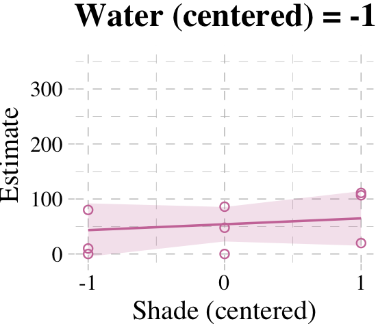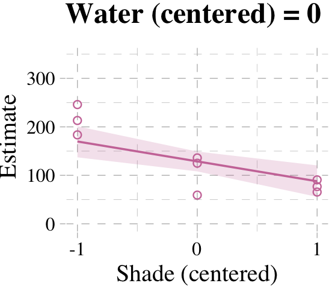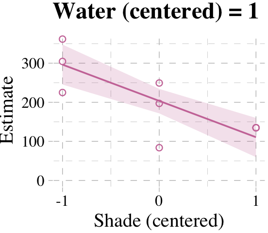
But we don’t necessarily need a loop. We can achieve all of McElreath’s Figure 7.7 with fitted(), some data wrangling, and a little help from ggplot2::facet_grid().
# `fitted()` for model b7.8
fitted(b7.8) %>%
as_tibble() %>%
# add `fitted()` for model b7.9
bind_rows(
fitted(b7.9) %>%
as_tibble()
) %>%
# we'll want to index the models
mutate(fit = rep(c("b7.8", "b7.9"), each = 27)) %>%
# here we add the data, `d`
bind_cols(bind_rows(d, d)) %>%
# these will come in handy for `ggplot2::facet_grid()`
mutate(x_grid = str_c("water_c = ", water_c),
y_grid = str_c("model: ", fit)) %>%
# plot!
ggplot(aes(x = shade_c)) +
geom_smooth(aes(y = Estimate, ymin = Q2.5, ymax = Q97.5),
stat = "identity",
fill = "#CC79A7", color = "#CC79A7", alpha = 1/5, linewidth = 1/2) +
geom_point(aes(y = blooms, group = x_grid),
shape = 1, color = "#CC79A7") +
scale_x_continuous("Shade (centered)", breaks = c(-1, 0, 1)) +
ylab("Blooms") +
coord_cartesian(xlim = range(d$shade_c),
ylim = range(d$blooms)) +
theme_pander() +
theme(text = element_text(family = "Times"),
panel.background = element_rect(color = "black")) +
facet_grid(y_grid ~ x_grid)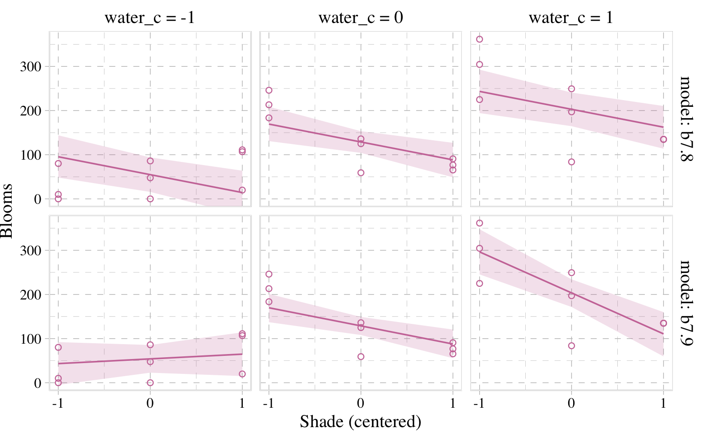
7.4 Interactions in design formulas
The brms syntax generally follows the design formulas typical of lm(). Hopefully this is all old hat.
7.5 Summary Bonus: marginal_effects()/conditional_effects()
The brms package includes the conditional_effects() function as a convenient way to look at simple effects and two-way interactions. To clarify, it was previously known as marginal_effects() until brms version 2.10.3 (see here). Recall the simple univariable model, b7.3:
b7.3$formula## log_gdp ~ 1 + ruggedWe can look at the regression line and its percentile-based intervals like so:
conditional_effects(b7.3)
If we feed the conditional_effects() output into the plot() function with a points = T argument, we can add the original data to the figure.
conditional_effects(b7.3) %>%
plot(points = T)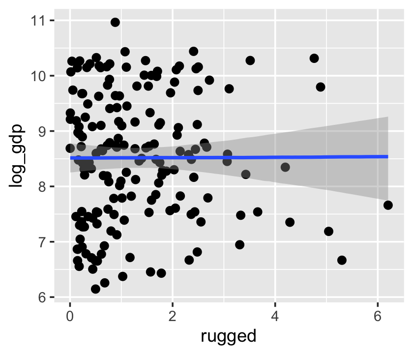
We can further customize the plot. For example, we can replace the intervals with a spaghetti plot. While we’re at it, we can use point_args to adjust the geom_jitter() parameters.
conditional_effects(b7.3,
spaghetti = T,
ndraws = 200) %>%
plot(points = T,
point_args = c(alpha = 1/2, size = 1))
With multiple predictors, things get more complicated. Consider our multivariable, non-interaction model, b7.4.
b7.4$formula## log_gdp ~ rugged + cont_africaconditional_effects(b7.4)
We got one plot for each predictor, controlling the other predictor at zero. Note how the plot for cont_africa treated it as a continuous variable. This is because the variable was saved as an integer in the original data set:
b7.4$data %>%
glimpse()## Rows: 170
## Columns: 3
## $ log_gdp <dbl> 7.492609, 8.216929, 9.933263, 9.407032, 7.792343, 9.212541, 10.143191, 10.2746…
## $ rugged <dbl> 0.858, 3.427, 0.769, 0.775, 2.688, 0.006, 0.143, 3.513, 1.672, 1.780, 0.388, 0…
## $ cont_africa <int> 1, 0, 0, 0, 0, 0, 0, 0, 0, 1, 0, 1, 1, 0, 0, 0, 0, 0, 0, 0, 0, 0, 0, 1, 1, 0, …One way to fix that is to adjust the data set and refit the model.
d_factor <-
b7.4$data %>%
mutate(cont_africa = factor(cont_africa))
b7.4_factor <-
update(b7.4,
newdata = d_factor,
file = "fits/b07.04_factor")Using the update() syntax often speeds up the re-fitting process.
conditional_effects(b7.4_factor)

Now our second marginal plot more clearly expresses the cont_africa predictor as categorical.
Things get more complicated with the interaction model, b7.5.
b7.5$formula## log_gdp ~ rugged + cont_africa + rugged:cont_africaconditional_effects(b7.5) 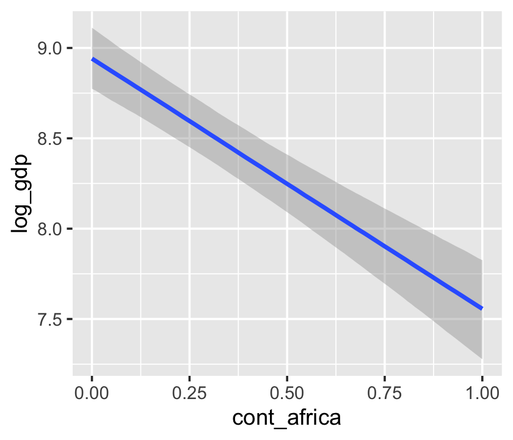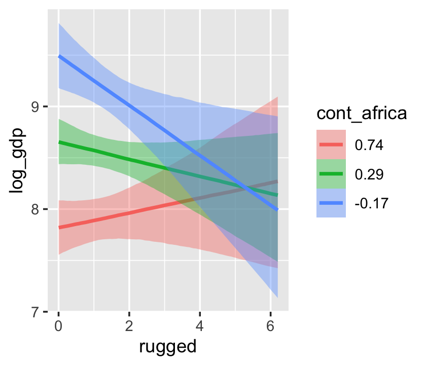
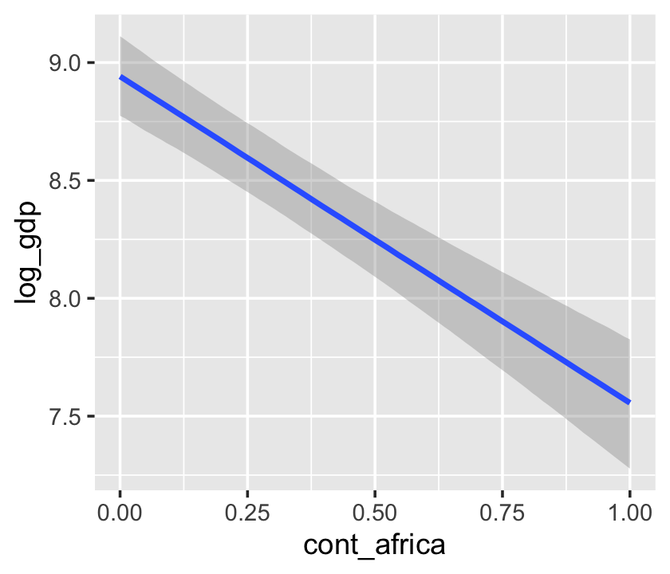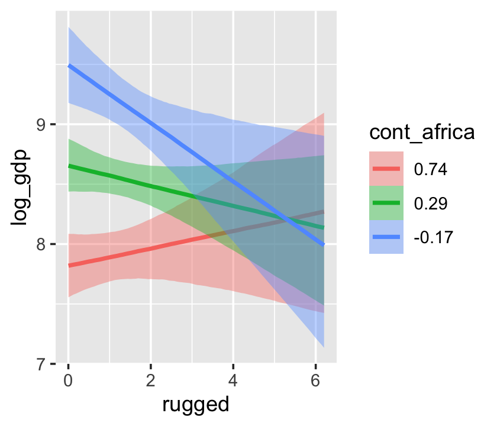
The conditional_effects() function defaults to expressing interactions such that the first variable in the term–in this case, rugged–is on the x axis and the second variable in the term–cont_africa, treated as an integer–is depicted in three lines corresponding its mean and its mean \(\pm\) one standard deviation. This is great for continuous variables, but incoherent for categorical ones. The fix is, you guessed it, to refit the model after adjusting the data.
d_factor <-
b7.5$data %>%
mutate(cont_africa = factor(cont_africa))
b7.5_factor <-
update(b7.5,
newdata = d_factor,
file = "fits/b07.05_factor")Just for kicks, we’ll use prob = .5 to return 50% intervals, rather than the conventional 95%.
conditional_effects(b7.5_factor, prob = .5)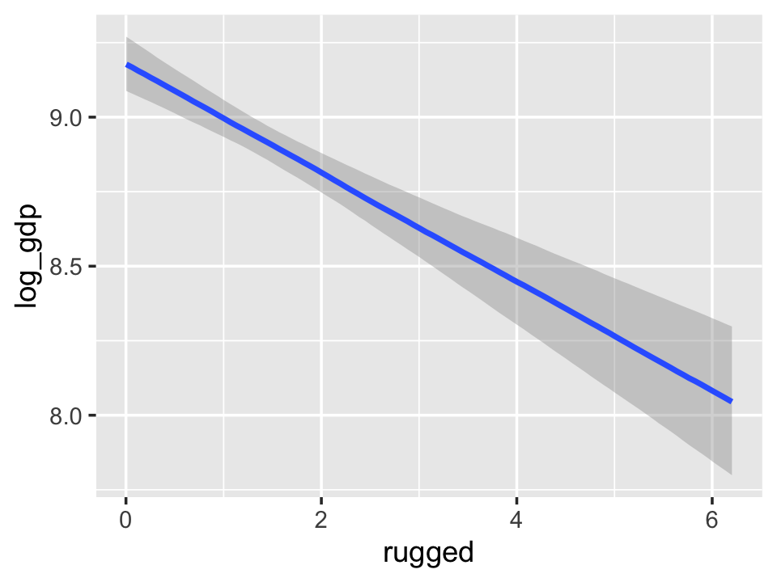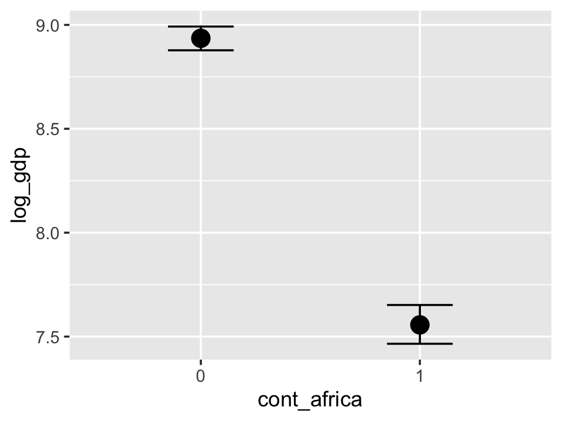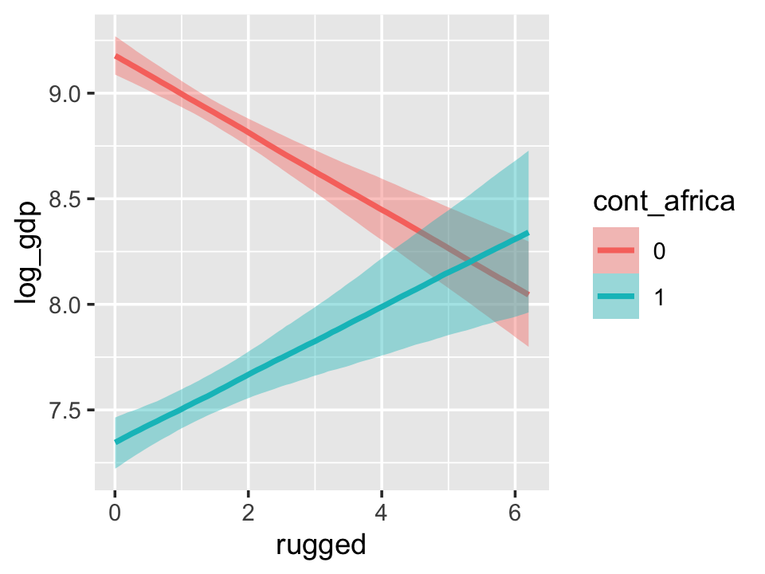
With the effects argument, we can just return the interaction effect, which is where all the action’s at. While we’re at it, we’ll use plot() to change some of the settings.
conditional_effects(b7.5_factor,
effects = "rugged:cont_africa",
spaghetti = T,
ndraws = 150) %>%
plot(points = T,
point_args = c(alpha = 2/3, size = 1), mean = F)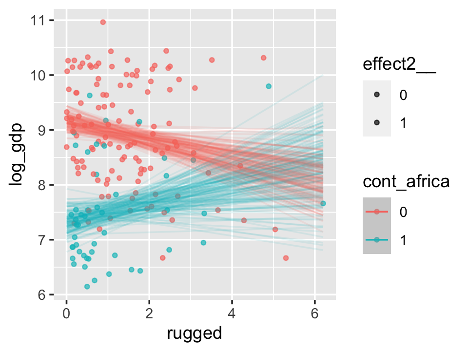
Note, the ordering of the variables matters for the interaction term. Consider our interaction model for the tulips data.
b7.9$formula## blooms ~ water_c + shade_c + water_c:shade_cThe plot tells a slightly different story, depending on whether you specify effects = "shade_c:water_c" or effects = "water_c:shade_c".
conditional_effects(b7.9,
effects = "shade_c:water_c") %>%
plot(points = T)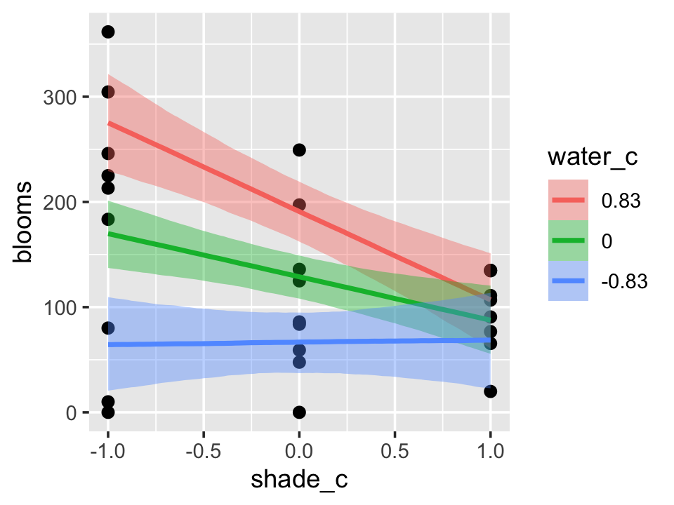
conditional_effects(b7.9,
effects = "water_c:shade_c") %>%
plot(points = T)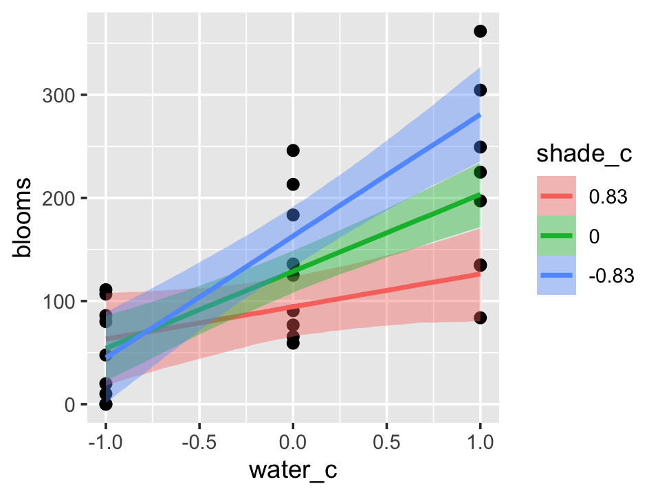
One might want to evaluate the effects of the second term in the interaction–water_c, in this case–at values other than the mean and the mean \(\pm\) one standard deviation. When we reproduced the bottom row of Figure 7.7, we expressed the interaction based on values -1, 0, and 1 for water_c. We can do that, here, by using the int_conditions argument. It expects a list, so we’ll put our desired water_c values in just that.
ic <-
list(water_c = c(-1, 0, 1))
conditional_effects(b7.9,
effects = "shade_c:water_c",
int_conditions = ic) %>%
plot(points = T)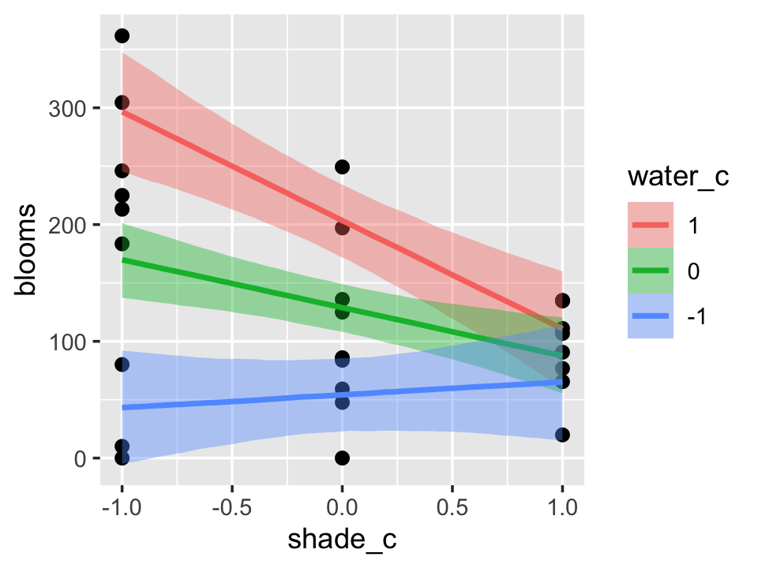
Session info
sessionInfo()## R version 4.2.2 (2022-10-31)
## Platform: x86_64-apple-darwin17.0 (64-bit)
## Running under: macOS Big Sur ... 10.16
##
## Matrix products: default
## BLAS: /Library/Frameworks/R.framework/Versions/4.2/Resources/lib/libRblas.0.dylib
## LAPACK: /Library/Frameworks/R.framework/Versions/4.2/Resources/lib/libRlapack.dylib
##
## locale:
## [1] en_US.UTF-8/en_US.UTF-8/en_US.UTF-8/C/en_US.UTF-8/en_US.UTF-8
##
## attached base packages:
## [1] parallel stats graphics grDevices utils datasets methods base
##
## other attached packages:
## [1] ggthemes_4.2.4 brms_2.18.0 Rcpp_1.0.9 cmdstanr_0.5.3
## [5] rstan_2.21.8 StanHeaders_2.21.0-7 forcats_0.5.1 stringr_1.4.1
## [9] dplyr_1.0.10 purrr_1.0.1 readr_2.1.2 tidyr_1.2.1
## [13] tibble_3.1.8 ggplot2_3.4.0 tidyverse_1.3.2
##
## loaded via a namespace (and not attached):
## [1] readxl_1.4.1 backports_1.4.1 plyr_1.8.7 igraph_1.3.4
## [5] sp_1.5-0 splines_4.2.2 crosstalk_1.2.0 TH.data_1.1-1
## [9] rstantools_2.2.0 inline_0.3.19 digest_0.6.31 htmltools_0.5.3
## [13] fansi_1.0.3 magrittr_2.0.3 checkmate_2.1.0 googlesheets4_1.0.1
## [17] tzdb_0.3.0 modelr_0.1.8 RcppParallel_5.1.5 matrixStats_0.63.0
## [21] xts_0.12.1 sandwich_3.0-2 prettyunits_1.1.1 colorspace_2.0-3
## [25] rvest_1.0.2 rgdal_1.5-30 haven_2.5.1 xfun_0.35
## [29] callr_3.7.3 crayon_1.5.2 jsonlite_1.8.4 lme4_1.1-31
## [33] survival_3.4-0 zoo_1.8-10 glue_1.6.2 gtable_0.3.1
## [37] gargle_1.2.0 emmeans_1.8.0 distributional_0.3.1 pkgbuild_1.3.1
## [41] shape_1.4.6 abind_1.4-5 scales_1.2.1 mvtnorm_1.1-3
## [45] DBI_1.1.3 miniUI_0.1.1.1 xtable_1.8-4 stats4_4.2.2
## [49] DT_0.24 htmlwidgets_1.5.4 httr_1.4.4 threejs_0.3.3
## [53] posterior_1.3.1 ellipsis_0.3.2 pkgconfig_2.0.3 loo_2.5.1
## [57] farver_2.1.1 sass_0.4.2 dbplyr_2.2.1 utf8_1.2.2
## [61] labeling_0.4.2 tidyselect_1.2.0 rlang_1.0.6 reshape2_1.4.4
## [65] later_1.3.0 munsell_0.5.0 cellranger_1.1.0 tools_4.2.2
## [69] cachem_1.0.6 cli_3.6.0 generics_0.1.3 broom_1.0.2
## [73] evaluate_0.18 fastmap_1.1.0 processx_3.8.0 knitr_1.40
## [77] fs_1.5.2 pander_0.6.5 nlme_3.1-160 mime_0.12
## [81] projpred_2.2.1 xml2_1.3.3 compiler_4.2.2 bayesplot_1.10.0
## [85] shinythemes_1.2.0 rstudioapi_0.13 gamm4_0.2-6 reprex_2.0.2
## [89] bslib_0.4.0 stringi_1.7.8 highr_0.9 ps_1.7.2
## [93] Brobdingnag_1.2-8 lattice_0.20-45 Matrix_1.5-1 nloptr_2.0.3
## [97] markdown_1.1 shinyjs_2.1.0 tensorA_0.36.2 vctrs_0.5.1
## [101] pillar_1.8.1 lifecycle_1.0.3 jquerylib_0.1.4 bridgesampling_1.1-2
## [105] estimability_1.4.1 httpuv_1.6.5 R6_2.5.1 bookdown_0.28
## [109] promises_1.2.0.1 gridExtra_2.3 codetools_0.2-18 boot_1.3-28
## [113] colourpicker_1.1.1 MASS_7.3-58.1 gtools_3.9.4 assertthat_0.2.1
## [117] withr_2.5.0 shinystan_2.6.0 multcomp_1.4-20 mgcv_1.8-41
## [121] hms_1.1.1 grid_4.2.2 coda_0.19-4 minqa_1.2.5
## [125] rmarkdown_2.16 googledrive_2.0.0 shiny_1.7.2 lubridate_1.8.0
## [129] base64enc_0.1-3 dygraphs_1.1.1.6